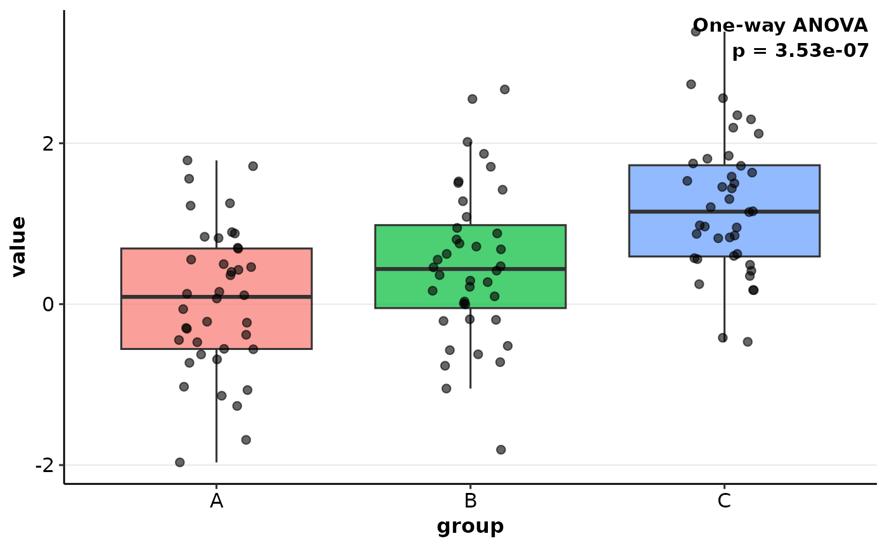

Conduct one-way ANOVA, Welch ANOVA, or Kruskal-Wallis test with automatic assumption checks, publication-ready visualization, and optional post-hoc comparisons. Designed for comparing two or more independent groups.
Usage
quick_anova(
data,
group,
value,
method = c("auto", "anova", "welch", "kruskal"),
post_hoc = c("auto", "none", "tukey", "welch", "wilcox"),
conf.level = 0.95,
plot_type = c("boxplot", "violin", "both"),
add_jitter = TRUE,
point_size = 2,
point_alpha = 0.6,
show_p_value = TRUE,
p_label = c("p.format", "p.signif"),
palette = "qual_vivid",
verbose = TRUE,
...
)Arguments
- data
A data frame containing the variables.
- group
Column name for the grouping factor. Supports quoted or unquoted names via tidy evaluation.
- value
Column name for the numeric response variable.
- method
Character. One of "auto" (default), "anova", "welch", or "kruskal". When "auto", the function inspects normality and homogeneity of variances to pick an appropriate test.
- post_hoc
Character. Post-hoc procedure: "auto" (default), "none", "tukey", "welch", or "wilcox". "auto" selects Tukey for ANOVA, Welch-style pairwise t-tests for Welch ANOVA, and pairwise Wilcoxon tests for Kruskal-Wallis.
- conf.level
Numeric. Confidence level for the test/intervals. Default is 0.95.
- plot_type
Character. One of "boxplot", "violin", or "both".
- add_jitter
Logical. Add jittered points? Default TRUE.
- point_size
Numeric. Size of jitter points. Default 2.
- point_alpha
Numeric. Transparency for jitter points (0-1). Default 0.6.
- show_p_value
Logical. Show omnibus p-value on the plot? Default TRUE.
- p_label
Character. P-value display: "p.format" (default) or "p.signif" (stars).
- palette
Character. Palette name from evanverse, or NULL for defaults.
- verbose
Logical. Print informative messages? Default TRUE.
- ...
Reserved for future extensions.
Value
An object of class quick_anova_result with elements:
- plot
ggplot object of the comparison
- omnibus_result
List describing the main test
- post_hoc
Post-hoc comparison table (if requested)
- method_used
Character. "anova", "welch", or "kruskal"
- descriptive_stats
Summary statistics by group
- assumption_checks
Results of normality/variance checks
- auto_decision
Details explaining automatic selections
- timestamp
POSIXct timestamp of the analysis
Examples
set.seed(123)
df <- data.frame(
group = rep(LETTERS[1:3], each = 40),
value = rnorm(120, mean = rep(c(0, 0.5, 1.2), each = 40), sd = 1)
)
res <- quick_anova(df, group, value)
#>
#> ── Automatic Method Selection ──
#>
#> ℹ Checking normality for each group...
#> ✔ Data appears reasonably normal (using p < 0.01 threshold for medium samples).
#> A: n = 40, p = 0.953
#> B: n = 40, p = 0.940
#> C: n = 40, p = 0.913
#> ✔ Variances appear equal (Levene's test, p = 0.854)
#>
#> ── Omnibus Test ──
#>
#> ✔ Completed classical one-way ANOVA (p = 0.0000)
#> ℹ Applied Tukey HSD post-hoc comparisons.
#> ✔ Loaded palette "qual_vivid" ("qualitative"), 9 colors
res$plot

summary(res)
#>
#>
#> ── Detailed Quick ANOVA Summary ──
#>
#>
#> ── Omnibus Test
#> Df Sum Sq Mean Sq F value Pr(>F)
#> group 2 27.51 13.755 16.91 3.53e-07 ***
#> Residuals 117 95.14 0.813
#> ---
#> Signif. codes: 0 ‘***’ 0.001 ‘**’ 0.01 ‘*’ 0.05 ‘.’ 0.1 ‘ ’ 1
#>
#> ℹ Effect sizes: eta_squared 0.224, omega_squared 0.210
#>
#>
#> ── Descriptive Statistics
#> # A tibble: 3 × 7
#> group n mean sd median min max
#> <fct> <int> <dbl> <dbl> <dbl> <dbl> <dbl>
#> 1 A 40 0.0452 0.898 0.0906 -1.97 1.79
#> 2 B 40 0.493 0.960 0.437 -1.81 2.67
#> 3 C 40 1.21 0.844 1.15 -0.468 3.39
#>
#>
#> ── Normality Checks (Shapiro-Wilk)
#> A: n = 40, p = 0.9530
#> B: n = 40, p = 0.9398
#> C: n = 40, p = 0.9129
#>
#> ℹ Decision: Medium sample size (30 <= n < 100). Data appears reasonably normal (Shapiro p >= 0.01). Using t-test.
#>
#>
#> ── Variance Equality (Levene)
#> Levene's test: p = 0.8542
#> Equal variance: TRUE
#>
#>
#> ── Post-hoc Comparisons (tukey)
#> # A tibble: 3 × 6
#> group2 group1 diff lwr upr `p adj`
#> <chr> <chr> <dbl> <dbl> <dbl> <dbl>
#> 1 B A 0.448 -0.0306 0.927 0.0716
#> 2 C A 1.16 0.684 1.64 0.000000201
#> 3 C B 0.715 0.236 1.19 0.00163
#>
#> Analysis performed: 2025-11-17 07:45:50